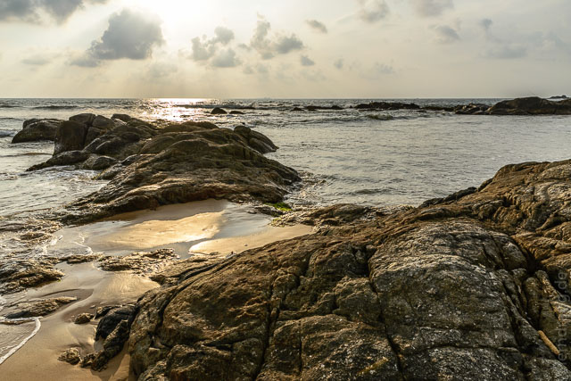
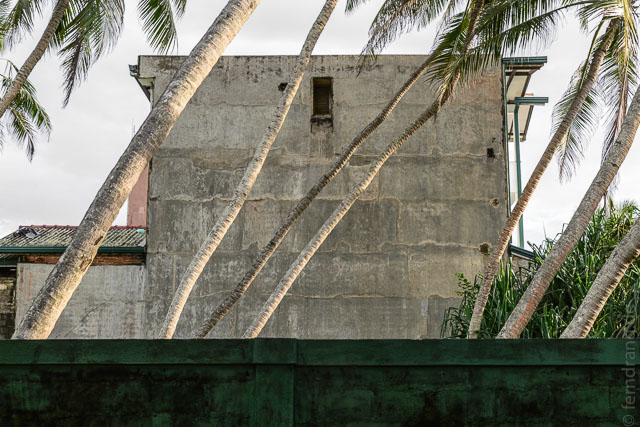
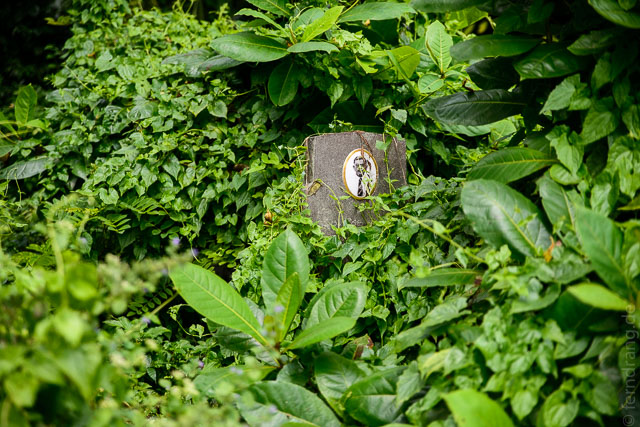
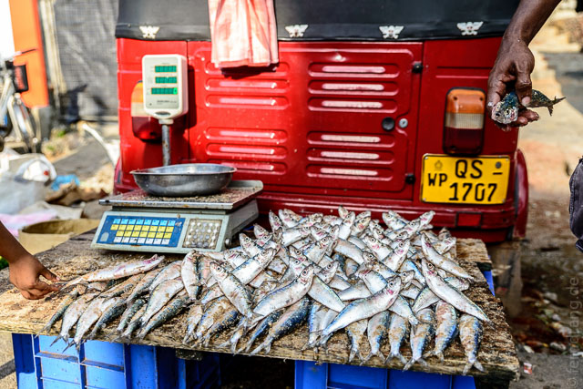
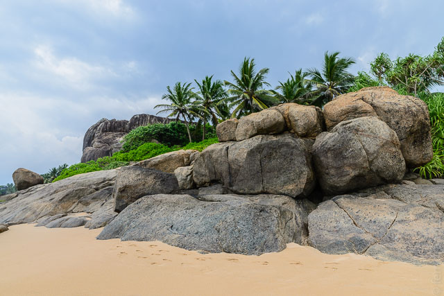
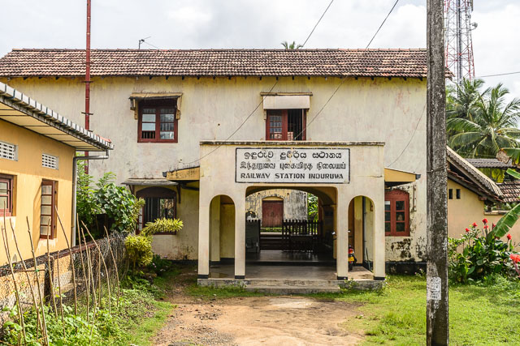
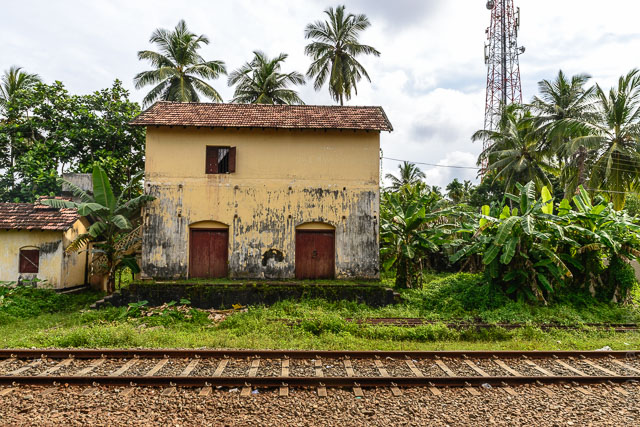

14/12/2014
Induruwa
Unser erster Stopp in Sri Lanka sollte nicht Colombo sondern ein Strandort zur Blitzentspannung sein. Vom Flughafen haben wir uns nach Induruwa bringen lassen. Die Strecke führte über drei sehr, sehr lange Stunden die Küste entlang nach Süden – unter anderem mitten durch Colombo, wo wir schon einen ersten Blick auf das Treiben werfen konnten. Nicht unindisch, aber nach der super entspannten Abfertigung am Flughafen – ohne Kampf um den Koffer – auch nicht zu indisch.
Die 90km bis Induruwa sind eigentlich ein einziges langgezogenes Straßendorf. Die Bebauung hört nie auf, genauso wenig wie das Hupen und die endlose Kette von Rikschas. Der Nachtflug mit Sri Lankan Air war Dank der winzigen Sitze nicht sonderlich erholsam, so dass der Jetlag schon im Taxi die Oberhand bekam.
In unserer Unterkunft, den Ikram Holiday Bungalows, sind wir vom Besitzer Husni empfangen worden, der sehr gut Deutsch spricht, wie verwirrend viele Sri Lanker, denen wir hier begegnen. Wir haben einen von vier riesigen Bungalows. Das Grundstück grenzt direkt an den Mangroven-Bewuchs, der den Strand säumt.
Das Meer ist hier richtig kräftig und donnert ohne Pause große Wellen an den Strand. Die Wassertemperatur hingegen ist exakt auf "Badewanne" eingestellt. Mit Mühe haben wir bis zum Abendessen, das uns vom Koch auf unserer eigenen Terrasse serviert wurde, durchgehalten.
In Induruwa ist nichts los. Im Hinterland liegt ein kleines buddhistisches Kloster malerisch in den Felder. Ansonsten gibt es nur ein paar Bruchbuden an der Straße und viele Hotels am Strand. Letztere sind meist ziemlich hässlich gebaut und wechseln sich mit Bauruinen ab, die statt Touristen höchstens Flughunde beherbergen werden. Obwohl die kilometerlangen Strände von Hotels gesäumt sind, sind nur eine Handvoll Menschen am Strand. (Sehr angenehm).
 Mit Bussen kommt man hier gut rum. Alle paar Minuten brettern sie vorbei. Wenn man jedem einzelnen Tuktuk-Fahrer auf dem Weg zur Bushaltestelle abgesagt hat, kann man einen Bus anhalten und kommt für 17 Rupien (ca. 0,10€) in den nächsten Ort. Aluthgama hat (entgegen der Gerüchte im Reiseführer) in jedem zweiten Haus einen Bankautomaten. Außerdem gibt es montags einen netten Markt, wo man seine Vorräte an getrocknetem Fisch oder Zwiebeln aufstocken oder Benzin frisch "vom Fass" in Cola-Flaschen kaufen kann. Den Rückweg haben wir über den Strand bestritten und sind an den schickeren Resorts von Bentota vorbei gelaufen, wo auch nicht viel los war.
Unser Ausflug nach Süden galt dem von Stefan Lohse gepriesenen Ahungalla Beach. Was den Autor zu diesem Lob verleitet hat, war nicht nachvollziehbar. Aber die 10km Rückweg durch ein halbes Dutzend langer Buchten hat uns einen schönen Spaziergang beschert. Am Ende waren wir dann doch vor unserer Haustür schwimmen.
Unser Gastgeber kümmert sich sehr gut um seine einzigen Gäste. Er hat uns die immer noch nicht erledigte Reiseplanung abgenommen, uns zu seinem Lieblingsrestaurant gefahren und sogar die Rikscha für den Rückweg bestellt. Das war auch ganz gut, weil der allabendliche Regen an diesem Abend besonders heftig war. Die Rikschas sind hier aber mit ausrollbaren Seitenmatten und sogar Scheibenwischer gut an den Monsun angepasst.
Da unsere Nachbarn die Trommeln ausgepackt haben und dazu pfeifen, ist es wohl Zeit abzureisen. Morgen nehmen wir den Zug nach Arunadhapura – vermutlich dem nördlichsten Punkt unserer Tour.
 